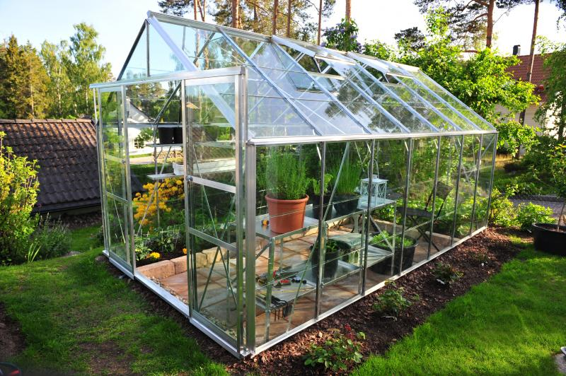

The "greenhouse effect" is the warming when certain gases in the Earth's atmosphere trap heat. These gases let in light but keep heat from escaping, like the glass walls of a greenhouse, hence the name. Sunlight shines onto the Earth's surface, where the energy is absorbed and then radiates back into the atmosphere as heat. Greenhouse gas molecules trap some heat in the atmosphere, which escapes into space. The more greenhouse gases concentrate in the atmosphere, and the more heat gets locked up in the molecules. Scientists have known about the greenhouse effect since 1824 when Joseph Fourier calculated that the Earth would be much colder if it had no atmosphere. This natural greenhouse effect is what keeps the Earth's climate livable. Without it, the Earth's surface would be an average of about 60 degrees Fahrenheit (33 degrees Celsius) cooler. In 1895, a chemist discovered that humans could enhance the greenhouse effect by producing carbon dioxide, a greenhouse gas. He kicked off 100 years of climate research that has given us a sophisticated understanding of global warming. Levels of greenhouse gases have gone up and down over the Earth's history, but they have been relatively constant for the past few thousand years. Global average temperatures had also stayed relatively consistent over that time— until the past 150 years. Humans are now significantly enhancing the greenhouse effect and warming Earth by burning fossil fuels and other activities that have emitted large amounts of greenhouse gases, particularly over the past few decades. In ways that end with many bad things, scientists warn. Human activity isn't the only factor that affects Earth's climate. Volcanic eruptions and variations in solar radiation from sunspots, solar wind, and the Earth's position relative to the sun also play a role. Like the weather pattern El Nino. But scientists' climate models to monitor Earth's temperatures consider those factors. Changes in solar radiation levels have contributed only about two percent to the recent warming effect. The balance comes from greenhouse gases and other human-caused factors. The short timescale of this recent warming is singular as well. Volcanic eruptions, for example, emit particles that temporarily cool the Earth's surface. But their effect lasts just a few years. Events like El Niño also work on relatively short and predictable cycles. On the other hand, the types of global temperature fluctuations that have contributed to ice ages occur in the process of hundreds of thousands of years. For thousands of years now, emissions of greenhouse gases to the atmosphere have been balanced out by greenhouse gases that are naturally absorbed. As a result, greenhouse gas concentrations and temperatures have been reasonably stable, which has allowed human civilization to flourish within a consistent climate. Greenland is covered with a vast amount of ice—but the ice is melting four times faster than thought, suggesting that Greenland may be approaching a dangerous tipping point, with implications for global sea-level rise. Now, humans have increased the amount of carbon dioxide in the atmosphere by more than a third since the Industrial Revolution. Historically, changes that have taken thousands of years are now taking decades because it's changing the climate faster than some living things can adapt. Also, a new and more unpredictable environment poses unique challenges to all life. Historically, Earth's atmosphere has regularly shifted between temperatures like those we see today and temperatures cold enough to cover much of North America and Europe with ice. The difference between average global temperatures today and during those ice ages is only about 9 degrees Fahrenheit (5 degrees Celsius). The swings have tended to happen slowly, over hundreds of thousands of years. But with concentrations of greenhouse gases rising, Earth's remaining ice sheets such as Greenland and Antarctica are starting to melt too. That extra water could raise sea levels significantly and quickly. By 2050, sea levels are expected to rise to 2.3 feet as glaciers melt. As the mercury rises, the climate can change in unexpected ways. In addition to sea levels increasing, weather can become more extreme. This means more intense major storms, more rain followed by more prolonged and drier droughts—a challenge for growing crops—changes in the ranges in which plants and animals can live, and loss of water supplies that have historically come from glaciers.
Copyright © 2022 JK. All rights reserved